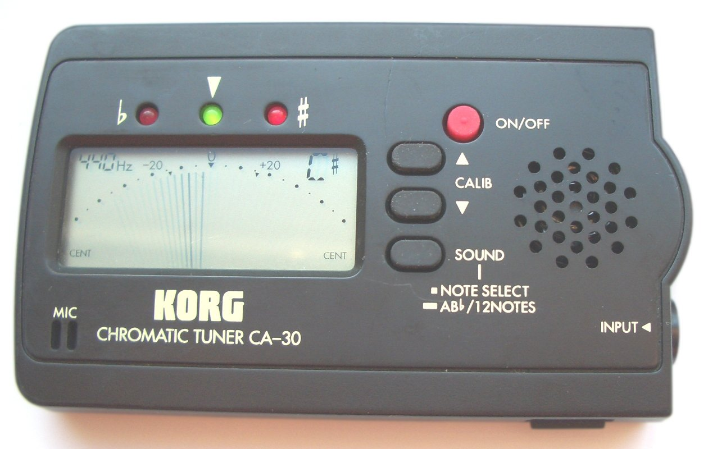

I love music, I play the flute and piccolo, and one of the big challenges is staying in tune. I see that when I am in orchestra, my conductor keeps musicians in tune by yelling at us.
But, at home, many of us do not have the same enviroment. So, I wanted to repilicate the same nurturing? enviroment to optimize intonation. When it is finished, I hope my project looks like a tuner, a box with demarcations noting 440 Hz as well as 30 Hz below or above, with a needle that moves according to the pitch the microphone picks up. Then, if the player is egregiously out of tune, the tuner will play an inspiring and slightly mean message.